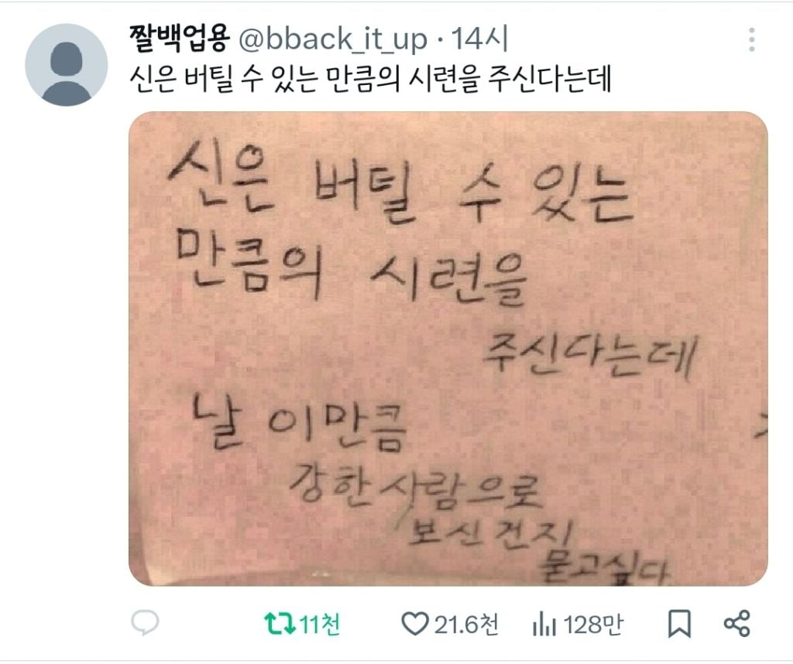

ㅅㅂ 버틸 수 있는거 맞음? 넘 하드코어인데

ㅅㅂ 버틸 수 있는거 맞음? 넘 하드코어인데
담당부서가 다름
미래점지과 복권당첨팀 조상주무관 문의하십셔
그거여기아니레도 관할이 저승과라니까
신 같은건 없고
뒤질 상황에 처한 사람은 뒤져서 남긴 말이 없고
살 상황의 생존자가 살아 남아서 저런 말이 남은 것.
저 문장은 이미 죽어 간 사람에 대한 모욕이라 생각 함.
죽은 사람에 대한 모욕이 알빠노 산 사람에게 희망이 더 필요한데
생존편향 오류의 예시인거같음
살만하니까 저런 소리하고있지
신이 잇다고생각한거부터가 잘못된거야
뭣 시골에 거유여우신이 없다고??
그건잇어 축늘어진 할미거유젖이긴한데
신이 힘조절 실패했다 카더라
크아아악
밸패 똑띠 안하냐ㅏㅏㅏㅏ
신이 리세마라중
ㄹㅇ 개빡셈 ㅋㅋㅋㅋ ㅅㅂ
농담을 진담처럼 받아먹는 사람들 있네 그러니까 삶이 팍팍하지 ㅋㅋ
그새끼들은 "숨만 붙어 있으면" 버틴걸로 치거든... ㅆㅂ...
못버틴새끼는 말이 없다고 ㅋㅋㅋㅋㅋ
그건 이제 자살률을 보시며는
힘들어서 못 버티고 자살한 사람들은 신이 버린 거임? 아니면 테스트한 거임? 어느 쪽이든 신이라는 새끼는 개 ㅈ같은 씹새끼임
못버틴 사람은 계산 안한 생존자 확증편향 아니냐
(보일러틀고 따뜻한 배달음식을 시켜먹으머)
ㅋㅋㅋㅋㅋㅋㅋ
못버텨서 자살한 사람 있는거보면 실수도 있는듯;;ㅇㅇ
못버티면 죽어 사라지고 살아남은 사람들만 있으니 그러지 뭐..
이겨내면 내 신도 못이기면(=자살한) 넌 내 신도 아님 모드니
와 싸이월드 감성
날 과대평가하지 말라고 아
뉴클리어 버스터!
일단 여기에 날세우는 애들은 삶이 많이 고된거같긴 함
죽고싶다
남들은 한번도 겪을까말까한 불행하고 해괴한 일을 많이겪음. 그래서 10대 시절부터 불행을 맡겨놓은듯 내꺼였고 인생이 진짜 억까였는데 학창시절에 교실에서 집단폭행당하고 고3때 집에서 아버지 병걸려서 피토하다가 죽고 어머니 내앞에서 식칼로 자살시도하시고 가족 형제복도 별로 없어서 친누나한테 항상 무시당하고 비교당하면서 살고 인복도 없어서 친구를 사귀면 항상 내가 퍼주고 당하고 이용당하고 돈빌려달라는 놈들 뿐이었음.
직업도 안풀려서 정규직 면접에서 다 떨어지고 계약직이나 전전함. 그 계약직에서도 사수 잘못만나서 고생하고 부서옮기고 했지만.. 20대에 우울증걸려서 밖에도 잘못나갔고 전문대 자퇴하고 4년동안 집에서 은둔생활했었음.
10대 20대 시절 불행으로 우울증이 깊어져 약복용중이고 트라우마가 너무쎈데 29살동안 연애는 커녕 친구 사귀는거조차 제대로 못해봄. 남들 다가는 헌포나 클럽간적 친구랑 술먹은적 해외여행 경험조차 없고 있어도 손에꼽음 트라우마가 지금도 떠오르고 종종 악몽도꿈. 그렇게 인생 대부분을 우울증으로 낭비함.
어느정도로 불행하냐면 일반인들이 갖고있는 가족 친구간의 추억이나 리즈시절이 거의 없어. 떠올리라고 하면 떠오르는 찬란했던 황금기가 하나도 없음. 아마 제일 행복한 시기가 7살때를 떠올려야할듯 면접에서 우울한티내니까 취업도 다떨어지고 진짜 불행한일만 생기는 사람은 업보갚으라고 태어날때 신이 점지해둔거냐?
내 의지와 관계없이 인생이 시련이 많은데 어떻게 극복해야되냐 죽고싶다. 엄살이라고 생각할수도 있지만 내 인생이 정상적인 사람들보다 확실히 가혹하다고 하던데. 열심히 살려고 했지만 노력할수록 오히려 꼬이고 불행해지는 인생.
그이후로 왜 내인생만 이따구일까 정말 초자연적인 그런게 있는걸까라는 의구심이 생겨서 점집도 가보고 사주도 봤지만 명확한 답은 못찾음. 우주에 총량법칙이 있다면 행복한 사람이 존재하기 위해 반대로 나처럼 고통받기 위해 태어난 인생이 있을까 싶기도해.
신이 어디있어 그런게 있으면 인생을 이런식으로 만들지 않음
그냥 우연과 필연의 교집합으로 이루어진게 인생일뿐 그런건 절대 없음
한국국적으로 다 해결될거라 생각하신거냐 로또도 시켜줘야지! 못 버티겠으니 요번주 로또 1등 당첨시켜주십쇼 신님 예?!